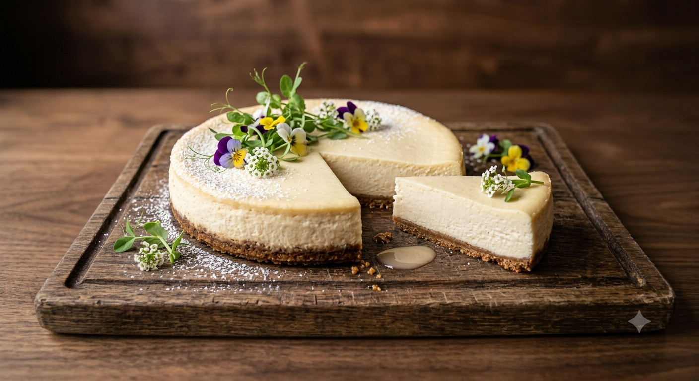

Home page
Cheesecake Recipe

Description
This new york cheesecake is dense and rich. It includes great techniques for letting cheesecake finish in the oven so that no cracks form as the cake cools. Its a favourite dessert of mine and served with my fresh strawbery sauce. The new york cheesecake is larger and richer than traditional cheesecake thanks to the addition of cream cheese and more egg yolks. Inside the new york cheesecake are two layers. The crust and the filling. The cheesecake can be frozen for up to two months.
Ingredients
- 18 graham crackers
- 3 tablespoons of melted butter
- 1 cup sour cream
- 1/4 cup all purpose flour
- 1 tablespoon vanilla extract
- 1 and a half cups of white sugar
- 2/3 cup of milk
- 4 large eggs
- 1 teaspoon finely grated lemon zest
- 1 teaspoon finely grated orange zest
Steps
- Preheat oven to 350 degrees F. Lightly grease bottom and sides of 9 inch springform pan.
- Mix graham cracker crumbs and melted butter together in a bowl until evenly moistened. Press crumb mixture into the bottom and about 1/2 inch up hte side of the springform pan.
- Whisk sour cream, flour, vanilla extract together in a bowl; set aside
- Stir cream cheese and sugar together with a wooden spoon in a separate bowl until evenly incorporated, 3 to 5 minutes; add milk and whisk until just combined. Whisk in eggs, one at a time, stirring well after each addition. Stir in lemon zest, orange zest, and sour cream mixture; whisk until just incorporated.
- Pour mixture into prepared springform pan.
- Bake in the preheated oven until the edges have nicely puffed and the surface of the cheesecake is firm except for a small spot in the center that will jiggle when the pan is gently shaken, about 1 hour.
- When the cheesecake is done, turn off the oven and let it cool in the oven for 3 to 4 hours. This prevents any cracks from forming on the top of the cheesecake.
- Serve and enjoy.